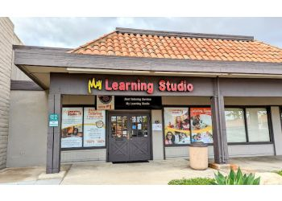
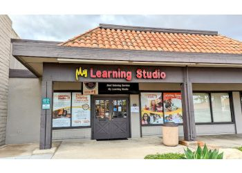
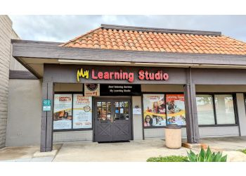

Rebecca Seanez
I am a second-year Anthropology major working towards my Bachelor's Degree in the Arts at the University of California, Riverside. I come from a Hispanic heritage and a low-income background. I am a first-generation college student and a member of the University Honors program. I am an organized, hard-working, and independent person when it comes to either school or work. I am very friendly and helpful when I’m working with others. I am always ready to learn something new, whether it’s with life schools or college coursework.
I did not have as many opportunities as others during my childhood, so I learned to make my own opportunities and work hard towards my goals. I have always believed that hard work would help me succeed in reaching my future goals, and have stuck with that since. Even though sometimes I overworked myself or lost my way, I got back on my feet and continued walking and striving forward. My parents always taught me to never give up and see whatever project I was doing to the end. Even if I lost interest in that project or I did not like the people I was working with, I still stuck with it, with a smile on my face, and made sure to make the best of it. Through the struggles and challenges that I have faced, I forged my path to get into this school and work towards an Anthropology degree.
Growing up, I had an interest in people’s stories, cultures, and histories. This mainly started because my mom immigrated from Honduras. On the car rides back from school, she would tell me and my sisters her childhood stories. I always enjoyed them, because they gave me a peak as to what life was like there and how different the lifestyle was from our own. So, when other people told their own stories, I started to somewhat piece together what their lifestyle was, their values, their ideals, and their backgrounds, so I could understand them better when we ever interacted. When I started thinking about what area of study I wanted to pursue, I chose Anthropology or the study of humans. I was aware that Anthropology isn’t a very popular or well-known area of study, but I was still ready to face that challenge. I wanted to keep learning about other people’s cultures and lifestyles and make a career out of that.
I have volunteered as a softball mentor and volunteered at my local church. I have worked as a tutor for about a year now. These experiences have allowed me to help my community with the skills I have learned. They have also helped me develop these skills more and learn new ones, such as mentoring and helping kids better understand the learning material they were given. They have helped me to look at present problems in my community and look at ways I can help my community with my knowledge, experiences, and present skills.
Experience
Tutor
• Tutored students in grades K-12
• Experience working with children of different age groups
Volunteer
• Assisted in projecting a slideshow of prayers during Mass
• Participated in weekly Youth Group to become more engaged with the church
Club Member
• Attended weekly meetings to learn and sign up for different events
• Participated in donation drives
• Helped set up local events
• Volunteered at local events
Education
University of California Riverside
Portfolio
 



